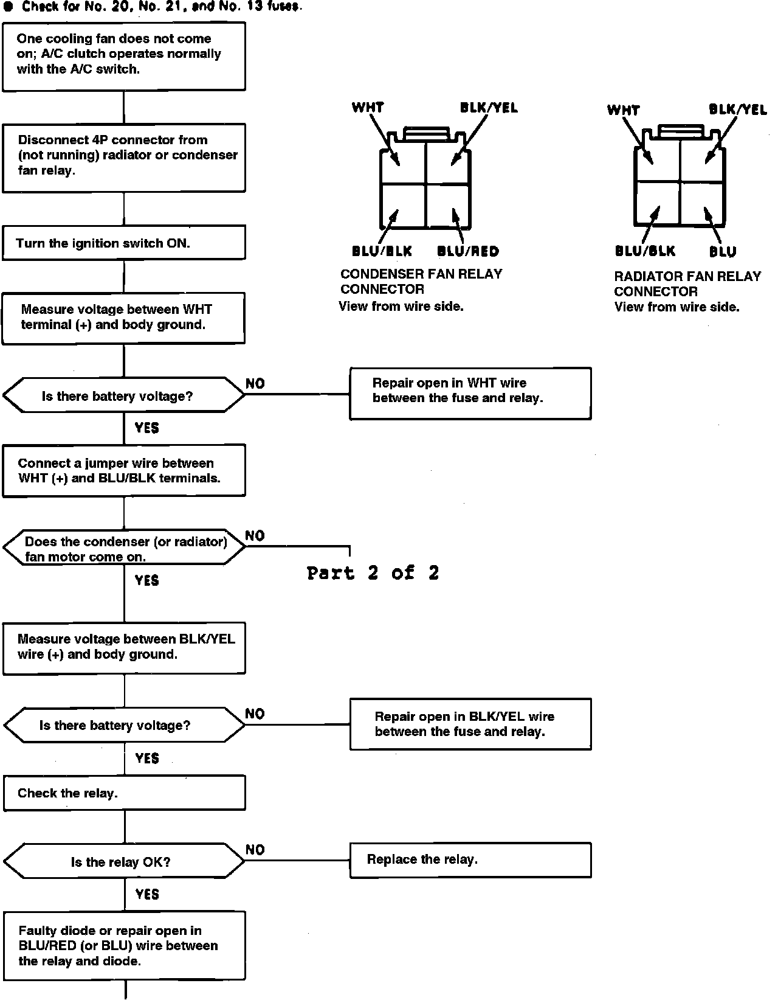
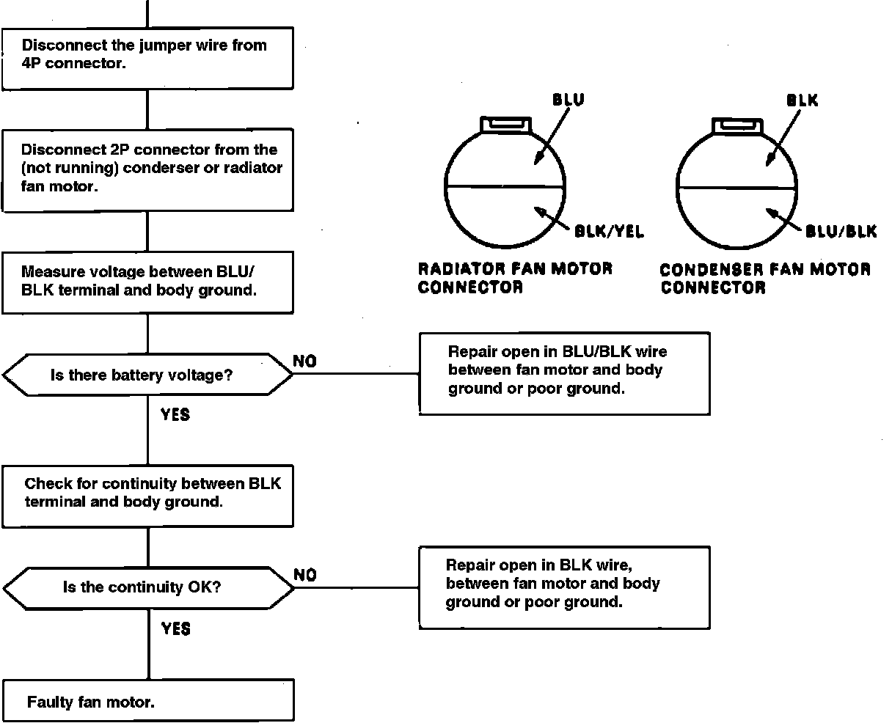

One Cooling Fan Inoperative, A/C Clutch Operates Normally
Fig. 2 Electric Cooling Fan Diagnosis. One Cooling Fan Inoperative, A/C Clutch Operates Normally (Part 1 Of 2):

Fig. 2 Electric Cooling Fan Diagnosis. One Cooling Fan Inoperative, A/C Clutch Operates Normally (Part 2 Of 2):
